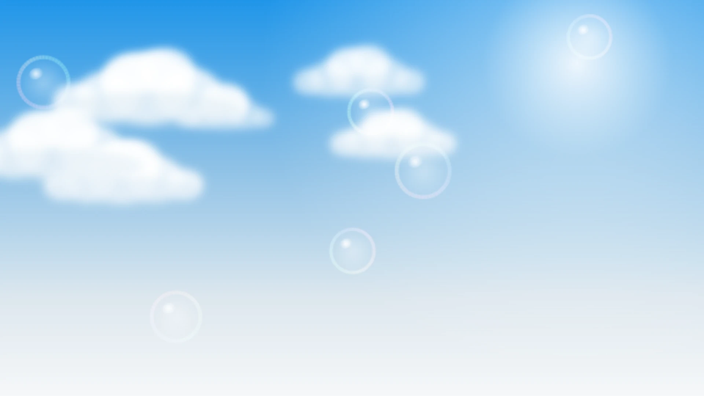
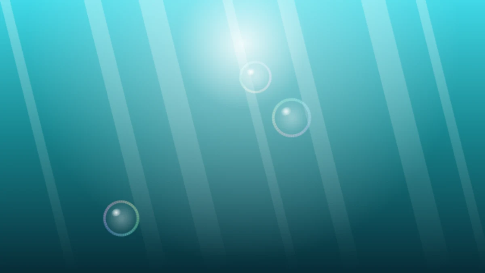

云天与透明气泡

通过 Make Aero 壁纸生成器导出。Sky Blue，6 个气泡、6 朵云，关闭散景、光束和暗角。1920 × 1080，本地 WebP，28,340 字节。
Make Aero 壁纸生成器 ↗网站的装饰图片与玻璃材质选自 Make Aero。

通过 Make Aero 壁纸生成器导出。Sky Blue，6 个气泡、6 朵云，关闭散景、光束和暗角。1920 × 1080，本地 WebP，28,340 字节。
Make Aero 壁纸生成器 ↗
同一生成器的 Underwater 场景，Ocean Teal，3 个气泡，关闭散景与暗角，保留水下光束。1200 × 675，本地 WebP，16,826 字节。用于音乐页头。
生成器 ↗依据 Make Aero 的 Glossy Orb、Window Glass 和 Button 开源代码调整颜色、阴影与尺寸。Copyright (c) 2025 Visnalize，MIT 许可原文随第二版保存。
玻璃球 ↗ · 窗体 ↗ · 按钮 ↗文字与符号使用系统字体，无外部图标包或字体请求。音乐资料复制自第一版，48 首均保留；《追逐阿航》的本地文件由你提供，不属于装饰图库。摄影内容为空。
核对日期：2026 年 11 月 10 日。